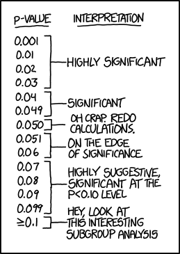

A significant part of my understanding of econometric concepts stems from the wonderful site of xkcd.com. Thank you, Randall Munroe!
Correlation

Conditional Risk

Significance

p-Values
0.05 level' and hope no one notices.">
Extrapolating

Bayes' Law

Frequentists vs. Bayesians

back